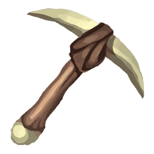

🎮 Jeux
Petits à-côtés pour grappiller poussières, boosters et cartes.
Tu dois d'abord te connecter avec Discord.
Creuse les tuiles pour trouver des trésors cachés — certains sont étalés sur plusieurs tuiles, il faut toutes les creuser pour libérer l'objet. Chaque tuile coûte 1 point d'énergie.

Chaque jour, 5 cartes à reconnaître à partir d'un zoom sur leur illustration — les mêmes pour tout le monde. 3 essais par carte : à chaque erreur, le zoom recule (et le gain baisse). Trouve une carte que tu n'as pas pour gagner un bon de craft sur elle !
Choisis une destination et envoie une de tes cartes l'explorer. Chaque lieu ramène des ressources pour les autres jeux (vers, os, minéraux, clés…), plus des poussières. Chaque jour, chaque lieu a une rareté et une extension favorites : un explorateur qui correspond ramène plus de ressources. La carte reste dans ta collection pendant ce temps.
🏺 Archéologie
Des tablettes anciennes (argile, pierre gravée, dorée) dorment sous tes grilles de fouille : une chance à chaque grille terminée, par toi ou par Milo. Gratte la terre pour extraire les blocs bruts, puis nettoie-les à l'atelier : minéraux, tessons gravés, crânes de dino et, avec de la chance, une relique. Le pinceau est doux et sans risque ; le grattoir et la pioche vont plus vite mais abîment ce qui est déjà à nu si la pression passe au rouge. Touches 1 à 5 : changer d'outil.
Chargement…
Complète les 9 cases de la grille du mois pour débloquer la récompense.
Lance ta ligne et, quand ça mord, choisis l'un des trois remous : l'un d'eux cache une prise parfaite. Chaque lancer coûte un ver de terre  (trouvé dans la terre restante d'une grille de fouille) et 1 point d'énergie. Avec de la chance : os pour Milo, clé, booster, coffre, pièce détachée, et des poissons pour l'aquarium.
(trouvé dans la terre restante d'une grille de fouille) et 1 point d'énergie. Avec de la chance : os pour Milo, clé, booster, coffre, pièce détachée, et des poissons pour l'aquarium.


🐠 Aquarium
En plus de ta prise, tu remontes parfois un poisson vivant : 24 espèces à collectionner, certaines seulement par une météo ou à une heure précise. Chaque poisson est revendu en poussières, et son record de taille est gardé. Ferre au bon moment pour attraper plus gros et plus rare (plus dur quand tu lances beaucoup de vers d'un coup) !
📖 Carnet de pêche
Que peut-on pêcher ?
Plante, attends que ça pousse, récolte : des vers de terre pour la pêche et, avec un peu de chance, un appât doré (aucune prise vide et prises rares multipliées pour un lancer).
🌱 Sachets de graines (choisis, puis plante tout ou parcelle par parcelle)
Chaque jour, emmène chacun de tes compagnons en promenade : choisis un lieu, il en revient avec une trouvaille (ingrédients pour la cuisine, carottes, vers blancs, poissons…) et un peu plus d'affection. Chaque compagnon a son lieu préféré, où il trouve deux fois plus. La clairière aux lucioles ne s'ouvre que la nuit.
Chargement…
Les fourneaux de l'auberge du village : combine les ingrédients du garde-manger (jardin, promenade, pêche) en plats qui donnent un bonus temporaire. Recuisiner un plat prolonge son bonus.
Chargement…
Tes dinos de compagnie : nourris-les avec ta pêche (🐟 poissons, 🌿 algues, 🦐 crevettes, 🪱 vers), joue avec eux et ramasse leurs cacas : chaque caca devient un engrais qui fait pousser le jardin plus vite. Un dino négligé devient triste, et si sa satiété et son bonheur tombent à zéro, il meurt : il ne reste qu’un tas d’os (tu récupères les os et la place). Adultes et contents, ils fouillent pour toi.
Une carte promo arc-en-ciel est enfermée dans la cage du coffre-fort, fermée par 6 cadenas. Chaque clé secrète (fouille, roue quotidienne…) fait sauter un cadenas : clique dessus !
Le coffre-fort est vide : est libre et t'attend dans ton coffre personnel.
🔒 Aller à mon coffre personnel